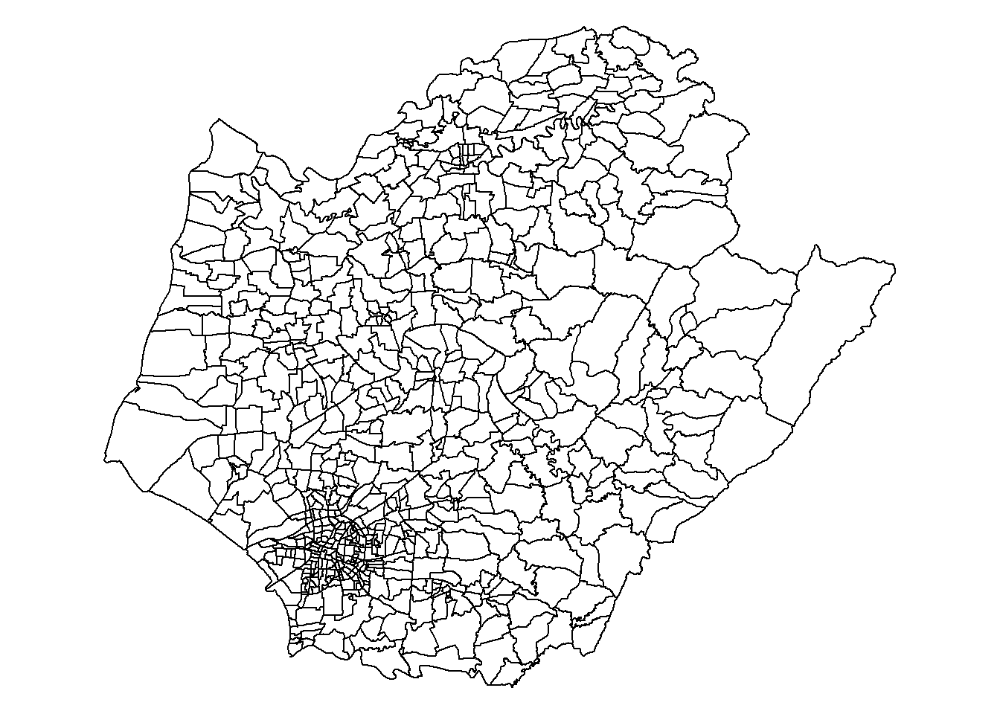
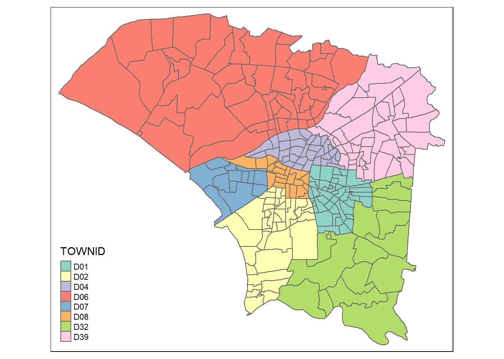

pacman::p_load(dplyr,maptools, rgdal,sf, sp, tidyverse, tmap, ggplot2, plotly, lubridate)Take-home Exercise 2: Application of Spatial and Spatio-temporal Analysis Methods to Discover the Distribution of Dengue Fever in Tainan City, Taiwan [DATA PREPARATION]
2 Overview
2.1 Setting the scene
Dengue Hemorrhagic Fever (commonly known as dengue fever) is a prevalent mosquito-borne disease in tropical and subtropical regions. Caused by the dengue virus transmitted by female Aedes aegypti and Aedes albopictus mosquitoes, it is characterised by acute symptoms. In 2015, Taiwan experienced a severe outbreak, reporting over 43,000 cases and 228 deaths. Subsequently, annual cases remained below 200 until 2023, when Taiwan recorded 26,703 cases, with Tainan City alone reporting over 25,000 cases.
2.2 Objectives
The goal is to determine if the distribution of dengue fever outbreaks in Tainan City, Taiwan, is independent spatially and spatio-temporally. If dependencies exist, the focus shifts to identifying clusters, outliers, and emerging hot spots/cold spots to gain insights into the specific spatial and spatio-temporal dynamics of the outbreaks.
The specific objectives of this take-home exercise include the following tasks:
Utilise the appropriate functions from the sf and tidyverse packages to prepare a geospatial data layer. This layer should consist of a study area represented by sf polygon features at the village level, confined to the D01, D02, D04, D06, D07, D08, D32, and D39 counties of Tainan City, Taiwan.
Generate a dengue fever layer within the specified study area, represented by sf point features. The dengue fever cases should be limited to epidemiology weeks 31-50 in the year 2023.
Create a derived dengue fever layer using the spacetime s3 class of sfdep. This layer should include, among other relevant information, a data field indicating the number of dengue fever cases by village and by epidemiology week.
Utilise the extracted data to conduct a global spatial autocorrelation analysis.
Utilise the extracted data for local spatial autocorrelation analysis.
Perform an emerging hotspot analysis using the extracted data.
Provide a detailed description of the spatial patterns revealed by the analyses conducted in the previous steps.
2 Getting Started
2.1 Data Acquisition
The study will utilise the following datasets to explore the distribution of dengue fever outbreaks in Tainan City, Taiwan, with respect to both spatial and spatio-temporal dimensions.
| Dataset | Type | Source | Path |
|---|---|---|---|
TAIWAN_VILLAGE_2020 Village boundary of Taiwan |
Geospatial (.shp) | https://data.gov.tw/en/datasets/130549 | data/geospatial/TAIWAN_VILLAGE_2020 |
Dengue_Daily.csv Reported dengue cases in Taiwan |
Aspatial (.csv) | https://data.cdc.gov.tw/en/dataset/dengue-daily-determined-cases-1998 | data/aspatial/Dengue_Daily.csv |
2.2 Importing Relevant R Packages
The R packages used in this project are:
dplyr: for data manipulationmaptools: set of tools for reading and manipulating spatial data formats, such as shapefilesrgdal: from CRAN, enables users to import, export, and manipulate spatial data within the R environmentsf: for importing, managing, and processing geospatial datatidyverse: a family of other R packages for performing data science tasks such as importing, wrangling, and visualizing datatmap: creating static and interactive mapsggplot2: used for data visualizationplotly: interactive graphing library for Rlubridate: for working with date-time data
Pacman assists us by helping us load R packages that we require.
2.3 Importing Geospatial Datasets
2.3.1 Village Boudary of Taiwan
For shapefile format, two arguments are required: dsn to define the data path, and layer to provide the shapefile name.
tainan_sf <- st_read(dsn = "data/geospatial",
layer = "TAINAN_VILLAGE")Reading layer `TAINAN_VILLAGE' from data source
`C:\fathimak2020\IS415-GAA\Take-home_Ex\Take-home_Ex02\data\geospatial'
using driver `ESRI Shapefile'
Simple feature collection with 649 features and 10 fields
Geometry type: POLYGON
Dimension: XY
Bounding box: xmin: 120.0269 ymin: 22.88751 xmax: 120.6563 ymax: 23.41374
Geodetic CRS: TWD97We see that the CRS is TWD 97; let’s verify whether it has been assigned the accurate EPSG code as well.
st_crs(tainan_sf)Coordinate Reference System:
User input: TWD97
wkt:
GEOGCRS["TWD97",
DATUM["Taiwan Datum 1997",
ELLIPSOID["GRS 1980",6378137,298.257222101,
LENGTHUNIT["metre",1]]],
PRIMEM["Greenwich",0,
ANGLEUNIT["degree",0.0174532925199433]],
CS[ellipsoidal,2],
AXIS["geodetic latitude (Lat)",north,
ORDER[1],
ANGLEUNIT["degree",0.0174532925199433]],
AXIS["geodetic longitude (Lon)",east,
ORDER[2],
ANGLEUNIT["degree",0.0174532925199433]],
USAGE[
SCOPE["Horizontal component of 3D system."],
AREA["Taiwan, Republic of China - onshore and offshore - Taiwan Island, Penghu (Pescadores) Islands."],
BBOX[17.36,114.32,26.96,123.61]],
ID["EPSG",3824]]The correct EPSG for TWD 97 is 3826, and it has been inaccurately assigned. Let’s assign the correct EPSG code.
tainan_sf <- st_set_crs(tainan_sf, 3826)
st_crs(tainan_sf)Coordinate Reference System:
User input: EPSG:3826
wkt:
PROJCRS["TWD97 / TM2 zone 121",
BASEGEOGCRS["TWD97",
DATUM["Taiwan Datum 1997",
ELLIPSOID["GRS 1980",6378137,298.257222101,
LENGTHUNIT["metre",1]]],
PRIMEM["Greenwich",0,
ANGLEUNIT["degree",0.0174532925199433]],
ID["EPSG",3824]],
CONVERSION["Taiwan 2-degree TM zone 121",
METHOD["Transverse Mercator",
ID["EPSG",9807]],
PARAMETER["Latitude of natural origin",0,
ANGLEUNIT["degree",0.0174532925199433],
ID["EPSG",8801]],
PARAMETER["Longitude of natural origin",121,
ANGLEUNIT["degree",0.0174532925199433],
ID["EPSG",8802]],
PARAMETER["Scale factor at natural origin",0.9999,
SCALEUNIT["unity",1],
ID["EPSG",8805]],
PARAMETER["False easting",250000,
LENGTHUNIT["metre",1],
ID["EPSG",8806]],
PARAMETER["False northing",0,
LENGTHUNIT["metre",1],
ID["EPSG",8807]]],
CS[Cartesian,2],
AXIS["easting (X)",east,
ORDER[1],
LENGTHUNIT["metre",1]],
AXIS["northing (Y)",north,
ORDER[2],
LENGTHUNIT["metre",1]],
USAGE[
SCOPE["Engineering survey, topographic mapping."],
AREA["Taiwan, Republic of China - between 120°E and 122°E, onshore and offshore - Taiwan Island."],
BBOX[20.41,119.99,26.72,122.06]],
ID["EPSG",3826]]
Important
Project Transformation
The imported data has been assigned the EPSG code 3826 for TWD 97 using st_set_crs.
par(mar = c(0,0,0,0))
plot(st_geometry(tainan_sf))
We use head() to gather more information about the dataset.
head(tainan_sf)Simple feature collection with 6 features and 10 fields
Geometry type: POLYGON
Dimension: XY
Bounding box: xmin: 120.053 ymin: 22.93251 xmax: 120.2905 ymax: 23.16919
Projected CRS: TWD97 / TM2 zone 121
VILLCODE COUNTYNAME TOWNNAME VILLNAME VILLENG COUNTYID COUNTYCODE
1 67000280002 臺南市 歸仁區 六甲里 Liujia Vil. D 67000
2 67000350032 臺南市 安南區 青草里 Qingcao Vil. D 67000
3 67000150009 臺南市 七股區 溪南里 Xinan Vil. D 67000
4 67000150010 臺南市 七股區 七股里 Qigu Vil. D 67000
5 67000150008 臺南市 七股區 龍山里 Longshan Vil. D 67000
6 67000150017 臺南市 七股區 中寮里 Zhongliao Vil. D 67000
TOWNID TOWNCODE NOTE geometry
1 D33 67000280 <NA> POLYGON ((120.2725 22.95868...
2 D06 67000350 <NA> POLYGON ((120.1176 23.08387...
3 D22 67000150 <NA> POLYGON ((120.121 23.1355, ...
4 D22 67000150 <NA> POLYGON ((120.1312 23.1371,...
5 D22 67000150 <NA> POLYGON ((120.0845 23.13503...
6 D22 67000150 <NA> POLYGON ((120.126 23.16917,...In the dataset, county IDs are contained in a column named TOWNID. Our focus is on the counties with the IDs D01, D02, D04, D06, D07, D08, D32, and D39. The provided code snippet utilises the subset function to extract the relevant counties from the tainan_sf dataset, and these selected rows are then stored in a new dataframe named counties.
d01 <- subset(tainan_sf, tainan_sf$TOWNID == "D01")
d02 <- subset(tainan_sf, tainan_sf$TOWNID == "D02")
d04 <- subset(tainan_sf, tainan_sf$TOWNID == "D04")
d06 <- subset(tainan_sf, tainan_sf$TOWNID == "D06")
d07 <- subset(tainan_sf, tainan_sf$TOWNID == "D07")
d08 <- subset(tainan_sf, tainan_sf$TOWNID == "D08")
d32 <- subset(tainan_sf, tainan_sf$TOWNID == "D32")
d39 <- subset(tainan_sf, tainan_sf$TOWNID == "D39")counties <- dplyr::bind_rows(list(d01, d02, d04, d06, d07, d08, d32, d39))Let`s check if counties has been assigned the correct EPSG.
st_crs(counties)Coordinate Reference System:
User input: EPSG:3826
wkt:
PROJCRS["TWD97 / TM2 zone 121",
BASEGEOGCRS["TWD97",
DATUM["Taiwan Datum 1997",
ELLIPSOID["GRS 1980",6378137,298.257222101,
LENGTHUNIT["metre",1]]],
PRIMEM["Greenwich",0,
ANGLEUNIT["degree",0.0174532925199433]],
ID["EPSG",3824]],
CONVERSION["Taiwan 2-degree TM zone 121",
METHOD["Transverse Mercator",
ID["EPSG",9807]],
PARAMETER["Latitude of natural origin",0,
ANGLEUNIT["degree",0.0174532925199433],
ID["EPSG",8801]],
PARAMETER["Longitude of natural origin",121,
ANGLEUNIT["degree",0.0174532925199433],
ID["EPSG",8802]],
PARAMETER["Scale factor at natural origin",0.9999,
SCALEUNIT["unity",1],
ID["EPSG",8805]],
PARAMETER["False easting",250000,
LENGTHUNIT["metre",1],
ID["EPSG",8806]],
PARAMETER["False northing",0,
LENGTHUNIT["metre",1],
ID["EPSG",8807]]],
CS[Cartesian,2],
AXIS["easting (X)",east,
ORDER[1],
LENGTHUNIT["metre",1]],
AXIS["northing (Y)",north,
ORDER[2],
LENGTHUNIT["metre",1]],
USAGE[
SCOPE["Engineering survey, topographic mapping."],
AREA["Taiwan, Republic of China - between 120°E and 122°E, onshore and offshore - Taiwan Island."],
BBOX[20.41,119.99,26.72,122.06]],
ID["EPSG",3826]]The correct EPSG for TWD 97 is 3826, and it has been inaccurately assigned. Let’s assign the correct EPSG code.
counties_sf <- st_transform(counties, st_crs(3826))We visualise our study area using tmap and apply a color code based on the county ID.
tmap_mode('plot')
tm_shape(counties_sf) +
tm_polygons("TOWNID") 
Tip
✅ Task Complete! We have obtained the counties of interest as the study area.
2.4 Importing Aspatial Dataset
2.4.1 Dengue Cases
dengue <- read_csv("data/aspatial/Dengue_Daily.csv")We use head() to gather more information about the dataset.
head(dengue)# A tibble: 6 × 26
發病日 個案研判日 通報日 性別 年齡層 居住縣市 居住鄉鎮 居住村里
<date> <chr> <date> <chr> <chr> <chr> <chr> <chr>
1 1998-01-02 None 1998-01-07 男 40-44 屏東縣 屏東市 None
2 1998-01-03 None 1998-01-14 男 30-34 屏東縣 東港鎮 None
3 1998-01-13 None 1998-02-18 男 55-59 宜蘭縣 宜蘭市 None
4 1998-01-15 None 1998-01-23 男 35-39 高雄市 苓雅區 None
5 1998-01-20 None 1998-02-04 男 55-59 宜蘭縣 五結鄉 None
6 1998-01-22 None 1998-02-19 男 20-24 桃園市 蘆竹區 None
# ℹ 18 more variables: 最小統計區 <chr>, 最小統計區中心點X <chr>,
# 最小統計區中心點Y <chr>, 一級統計區 <chr>, 二級統計區 <chr>,
# 感染縣市 <chr>, 感染鄉鎮 <chr>, 感染村里 <chr>, 是否境外移入 <chr>,
# 感染國家 <chr>, 確定病例數 <dbl>, 居住村里代碼 <chr>, 感染村里代碼 <chr>,
# 血清型 <chr>, 內政部居住縣市代碼 <chr>, 內政部居住鄉鎮代碼 <chr>,
# 內政部感染縣市代碼 <chr>, 內政部感染鄉鎮代碼 <chr>We must retrieve epidemiological data for weeks 31-50 of the year 2023 from this dataset. We can utilise the lubridate package. Then we will choose the necessary columns, rename them, and save the results in a new dataframe named dengue_clean.
The columns to be selected and renamed are:
發病日: Onset date
最小統計區中心點X: x-coordinate
最小統計區中心點Y: y-coordinate
Simultaneously, any missing values will be eliminated. Cells containing missing values are denoted by the word ‘none’. So, we will filter out rows where X_coordinate is not equal to ‘none’ and Y_coordinate is not equal to ‘none’ to eliminate missing values.
dengue_clean <- dengue %>%
filter(between(week(as.Date(發病日)), 31, 50) & year(as.Date(發病日)) == 2023) %>%
select(
Onset_date = 發病日,
X_coordinate = 最小統計區中心點X,
Y_coordinate = 最小統計區中心點Y
) %>%
filter(X_coordinate != 'None' & Y_coordinate != 'None')Now, we will convert dengue_clean to an sf object by assigning the appropriate CRS.
dengue_sf <- st_as_sf(dengue_clean,
coords = c("X_coordinate", "Y_coordinate"),
crs = 4326) %>%
st_transform(crs = 3826)We need to identify which points from the dengue_sf object intersect with our study area defined by the counties_sf.
dengue_counties <- st_intersection(dengue_sf, counties_sf)#write_rds(dengue_counties, "data/rds/dengue_counties.rds")
dengue_counties <- read_rds("data/rds/dengue_counties.rds")Let’s plot and visualise these points on a map.
tm_shape(counties_sf) +
tm_polygons("TOWNID") +
tm_shape(dengue_counties) +
tm_symbols(size = 0.02, col = "black")
Tip
✅ Task Complete! We have extracted a dengue fever layer within the study area.